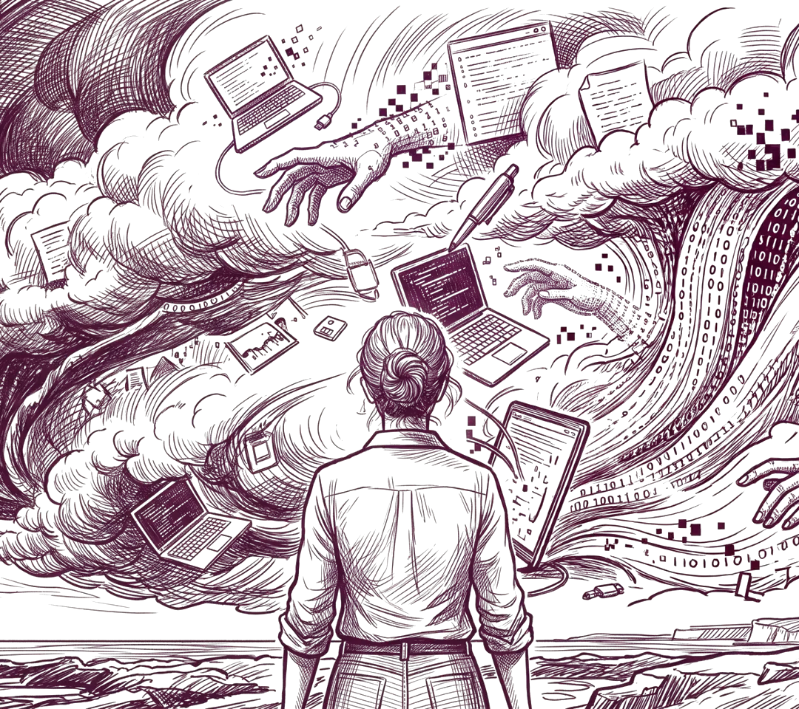

About
About me
My nephews call me Aunt Sparkle because my energy lights up the room. I'm an Energizer Bunny task chameleon and as dependable as a Labrador.
Every perspective deserves to be heard and contemplated despite differences of opinion. My writing style is rooted in a desire to understand the intricate aspects of human consciousness. In my current role as a Copywriter at Supremo Media, I translate this into SEO-driven content that connects with readers experiencing the hardships of addiction while supporting organic growth.
My desire to seek and deeply understand other ways of thought formed through the three years I spent as a Special Education Teacher, a role that required me to navigate differently programmed brains and build trust through discernment and adaptability in my communication. Working with kids gives you a look into the uninhibited impulses of humanity, and into what it means to relate to others while your perspective is still forming. My students saw the world in ways I could never have reached on my own.
I've learned that the most beneficial technique I can employ for myself is building rapport and making small connections with as many people as I can. I'm lucky enough to have strong interpersonal communication skills, so further developing them will offer me the greatest opportunity to succeed professionally.
Writing
- Copywriting: hooks, headlines and captions
- SEO blogs, FAQ content and content briefs
- Newsletter and web copy
- Persuasive writing and storytelling
- A/B copy variants
- Proofreading and consistency checks
Marketing and research
- Campaign planning and performance insights
- Audience and competitor research
- Social campaigns (Instagram, LinkedIn, Reddit)
- Short-form video (Reels and Shorts)
- Qualitative interviews and surveys
- Stakeholder interviewing
- Event planning and promotion
- Public speaking and presenting
Publishing and coordination
- Project and timeline coordination
- Contributor outreach and document tracking
- Print specification and book production
- Outreach and relationship management
- Community building
- Conflict resolution
- Design thinking
Tools
- WordPress
- SEMrush, Search Console and Google Analytics
- Canva and Adobe Photoshop
- Microsoft Office, including Excel trackers and PowerPoint
- Google Workspace, Teams and OneDrive
- Mac, Keynote and Pages
- AI tools (Claude, Gemini, ChatGPT) for research, drafting and fact-checking
Additional
- Eligible to work in the UK
- Experience using AI tools in content creation and workflow support
- Interests: open-access publishing, intellectual property and digital rights, AI and emerging technology
Experience
Where I've worked
Copywriter
Supremo Media, London
October 2025 – Present
- Write SEO-driven blogs for an addiction treatment client, from seasonal pieces timed to holidays to evergreen guides on relapse prevention, all published under my name on apex.rehab.
- Write content briefs and FAQ content, using SEMrush, Google Analytics and Search Console to decide what to write and what to update next.
- Update around 25 WordPress pages a month, keeping copy accurate and up to date while adding target keywords and reorganizing content blocks.
- Optimize client content for GEO and traditional SEO and build consistent business profiles on third-party sites.
- Collaborate with cross-functional teams to achieve content consistency and maintain brand image.
Volunteer Steward
MCM Comic Con London
May and October 2026
- Stewarded the panelists room on Friday and Sunday in May, and the Side Quest, Career Fair and LAN section on Friday in October.
Nanny
Private Family
July 2023 – August 2025
- Elegantly managed the day-to-day schedule for two young children and kept their parents in the loop.
Sales Associate
Anthropologie, Baton Rouge
September 2021 – October 2023
- First point of contact for customers, working out what they needed and recommending tailored options that contributed to team sales targets and KPIs.
- Built strong customer relationships through attentiveness and attention to detail.
- Covered every part of the sales floor: greeting, selling, product knowledge, styling, cash wrap, restock and shopkeeping.
- Resolved customer complaints promptly and courteously, escalating when necessary.
Special Education Teacher
The Dunham School, Baton Rouge
August 2020 – May 2023
- Managed IEPs, progress reports and class scheduling, adapting communication to the needs of each student.
- Kept families informed about achievements and areas of concern, building trust through regular updates.
- Worked as a team with my co-teacher to develop individualized plans for each student's academic success.
- Started at Dunham as an aftercare worker in 2014, was promoted to nursery worker in 2018, then to teacher in 2020.
Aftercare Worker, Nursery Worker and Summer Camp Supervisor
The Dunham School, Baton Rouge
2014 – 2023
- Supervised summer camp from 2018 to 2023, organizing events and activities, creating itineraries and flyers, gathering materials and readying spaces.
- Communicated with children, parents and guardians about daily activities, behaviors and problems.
- Solved severe behavioral issues in positive and constructive ways, with consistently positive feedback from parents.
Marketing and publishing projects
What I've led
Marketing Scheduler, then Marketing Head
Ink, Paper, Power · MA Publishing event
February – April 2026
- Noticed after about a month that our department had no direction, so I built a campaign proposal with an audience, a vision and time-bound goals for each team.
- Wrote the brief for each team, from newsletter blurbs to a 15 second speaker snippet, and acted as liaison between marketing, design and the editors.
- Reached 161 Eventbrite sign ups against a goal of 200, more than previous classes, with 39,350 Instagram views and LinkedIn followers up 245.6%.
- When our class account was banned from Reddit within an hour, posted from my personal account instead and reached around 4,000 views on r/publishing.
- Reviewed the metrics with our social media manager afterwards and learned that specific, actionable goals make problems visible early.
Project Manager
Embodied · book publication
2025 – 2026
- Ran the schedule and communication between editing, design and binding for a clothbound art book on how sculpture has represented the female figure, printed in a run of six.
- Recruited contributors through cold emails and an open call, tracking each consent form and their materials in a shared document.
- Helped our editor find more sculptures and acquire their image licenses.
Project Manager and contributing author
Decolonising the Archive · zine publication
2025 – 2026
- Created the project timeline and coordinated communication between group members for a ring-bound zine reading UAL's archive through a postcolonial lens.
- Wrote the student commentary on the Jesuit Mission Press.
Dissertation
MA Publishing, University of the Arts London
In progress
- Qualitative case study of Libraro, a platform that uses blockchain to protect authorship, on intellectual property and the protection of written work in the age of AI.
- Approached and interviewed two C-suite leaders at technology companies and an AI professional.
Working with AI
Where I Stand: Do not go gentle into that good LLM
Using AI tools is no longer a will they, won't they, and instead a how to rage against the dying of human creativity. Hesitation about implementing AI in content creation and workflow support is an obvious reaction when you suddenly see AI complete your week's work in fifteen minutes. We can't let our fear of being replaced keep us from understanding and adapting to the massive benefits these tools can give us. Quick research as a starting point is different from heavily relying on an AI to create your whole argument. We use it as a tool to expedite formerly strenuous processes, like how farmers adapted to using tractors instead of hoeing the ground through blood, sweat and tears.
We must be aware of AI's potential to make mistakes, and understand that the result we receive truly comes from the prompts we design and send in. A keen eye and attention to detail make possibly unreliable statistics about publishing newsletters or monthly traffic rates a non-issue. We can use it for making processes faster like basic translation, but an AI will never be able to translate the nuances of literature between languages in the way that an experienced translator could. AI could make us lazy or it could put a new drive within us to prove ourselves capable of harnessing its power for our benefit rather than being overshadowed and left behind. I'm willing to adapt and learn to work with these tools because in the end we know they are far too convenient to be going away anytime soon. I'm willing to blaze like a meteor in the face of AI's blinding light, I will not go gentle into that good LLM.

Education
Where I've studied
MA Publishing
University of the Arts London
September 2025 – Present
- Relevant areas: publishing strategy, audience growth and engagement, community building, content development, project management, book production.
- Mentored through UAL by an industry professional, who reviewed my CV and introduced me to peers in publishing.
BA Creative Writing
Louisiana State University
September 2014 – 2020
- Relevant areas: editorial practice, research and critical analysis, audience-focused writing, narrative development, advanced composition.
- Coursework in mass communication, media literacy and education, including an original survey-based study of the slang terms lowkey and highkey.
From my teaching years